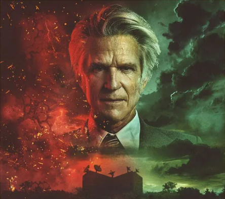
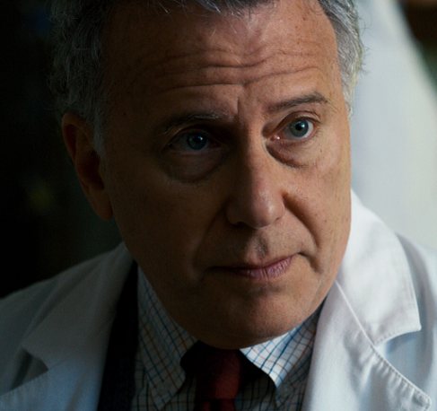
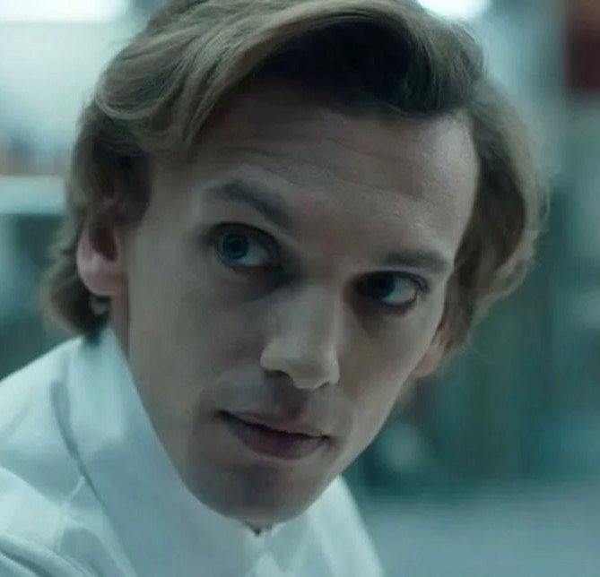

마틴 브래너
Martin Brenner배우 : 매튜 모딘
호킨스 연구소장. 과거 MK 울트라 프로젝트에 참여했으며 호킨스에서 비밀리에 실험을 이어나가고 있었다. 일레븐에게는 papa라고 불리며 일레븐을 비롯한 특수한 능력의 아이들을 양산하여 소련에 맞설 무기로 개발하려 했고, 이 과정에서 납치와 고문, 공문서 조작을 밥먹듯이 해왔다. 확실히 도가 지나친 인물로 시즌 1에서 데모고르곤보다도 위압적인 존재감을 보였다.

새뮤얼 오언스
Sam Owens배우 : 폴 라이저
시즌 2의 새 호킨스 연구소장. 전 연구소장인 마틴 브래너와 달리 현실적이며 인간적인 모습을 보인다. 정부 측 인물이지만 비밀 무기를 연구하기 위해 온 것이 아니라 마틴 브래너의 잘못을 수습하러 왔다는 점에서 차이점이 크다.

헨리
Henry배우 : 제이미 캠벨 바우어
호킨스 연구소의 직원. 일레븐의 능력을 되찾는 과정(니나 프로젝트)에서 호킨스 연구소에서 자란 회상을 하며 등장한다. 일레븐에게 말을 걸며 도움을 주기도 한다. 능력을 조절하지 못하며 같은 연구 대상 동료들에게 왕따를 당하는 일레븐에게 몰래 조언을 해주며 일레븐에게 시설이 숨기고 있는 진실을 알려주지만...